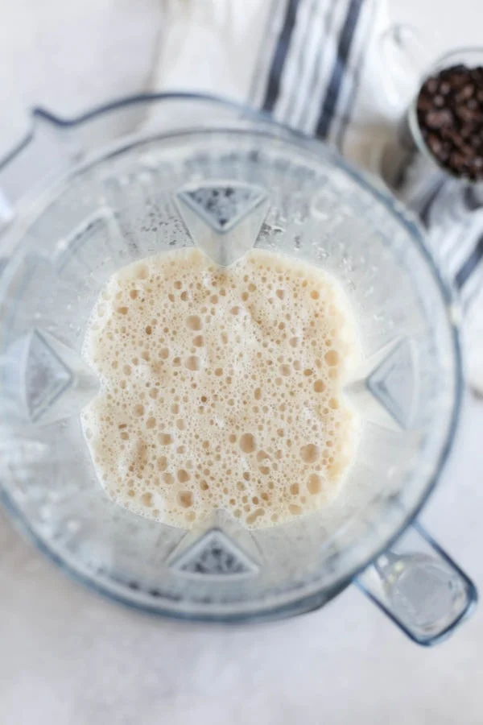
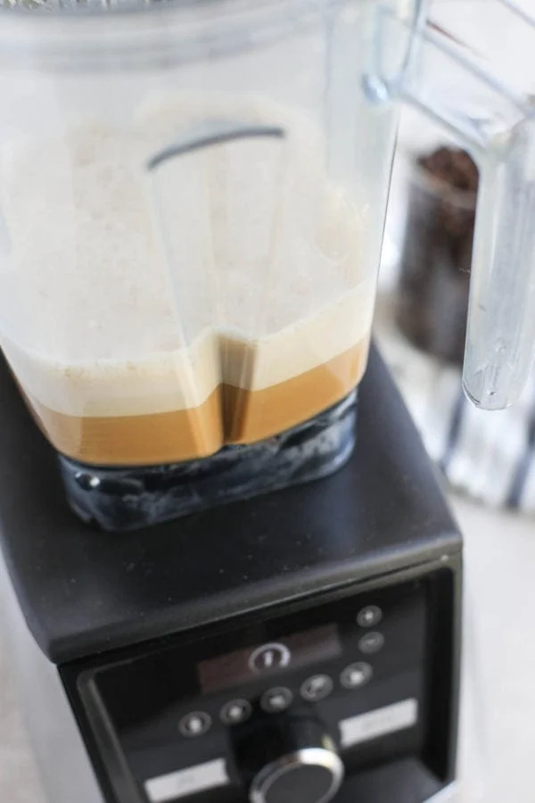
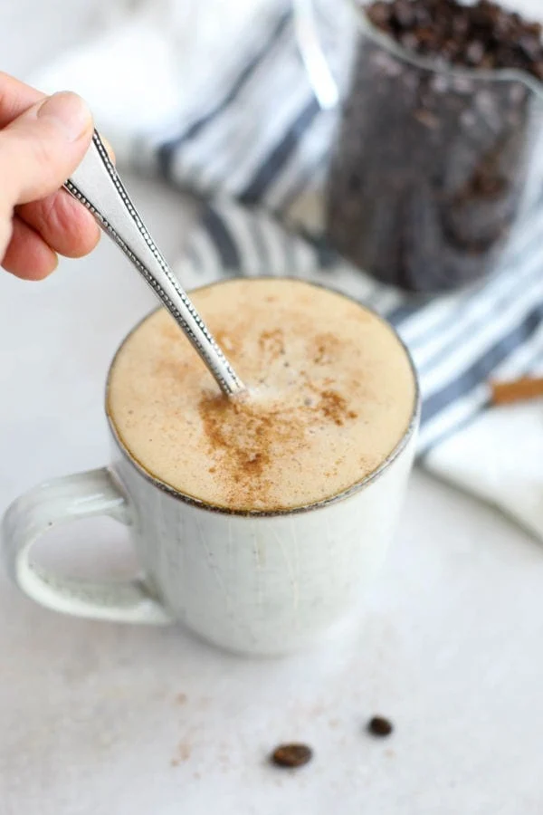

Ingredients
- 12 ounces strongly brewed coffee (we like Purity Organic dark roast)
- 2 teaspoons coconut oil
- ½-1 teaspoon ghee or unsalted grass-fed butter (for a vegan or dairy-free option replace with coconut oil)
- ¼–½ teaspoon ground cinnamon
- ¼ cup unsweetened coconut milk or almond milk (optional-adds more creaminess)
- ⅛ teaspoon vanilla extract
Directions
- Brew coffee in a coffee maker or French press.
- Add all ingredients to the blender and blend on high for 15-30 seconds until creamy and frothy.
- Pour into a coffee mug, dust with additional cinnamon, if desired, and enjoy.